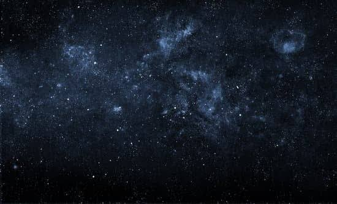

For the Benefit of All
NASA investigates the unknown in air and space, innovates for the benefit of humanity, and inspires the world through discovery.

Featured News
Recently Published
FEATURED VIDEO
Watch the 2026 Perseids Meteor Shower LIVE
Grab a blanket, a snack – maybe some caffeine – and stay up late with us as we watch the 2026 Perseids meteor shower! The Perseids is one of the best annual meteor showers – known for its bright fireballs. The shower peaks on the morning of Aug. 13, when viewers could see up to 50 meteors an hour if viewing conditions are favorable. Marshall Space Flight Center is hosting this watch party live on YouTube at 11 p.m. CT on Aug. 12. Throughout the broadcast, we will show real-time sky imagery from Marshall’s Automated Lunar and Meteor Observatory (ALaMO). Meteoroid experts from Marshall and guest subject matter experts will join the event to discuss the science behind the Perseids and answer YOUR questions in real time.